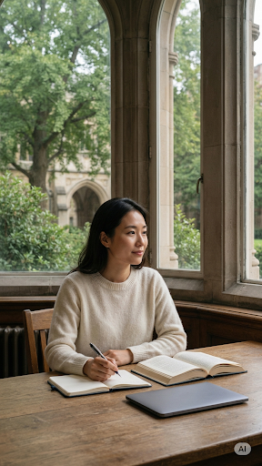
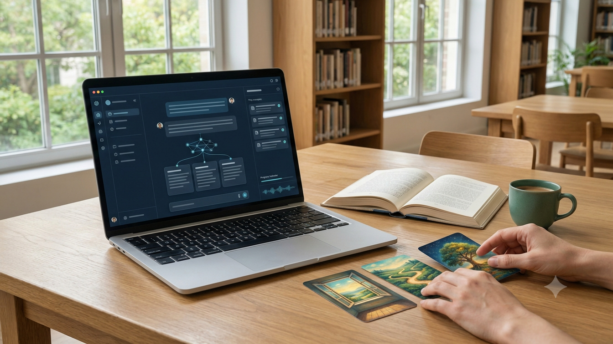
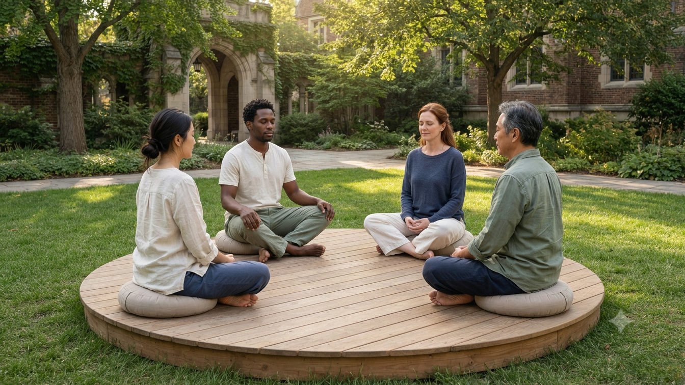
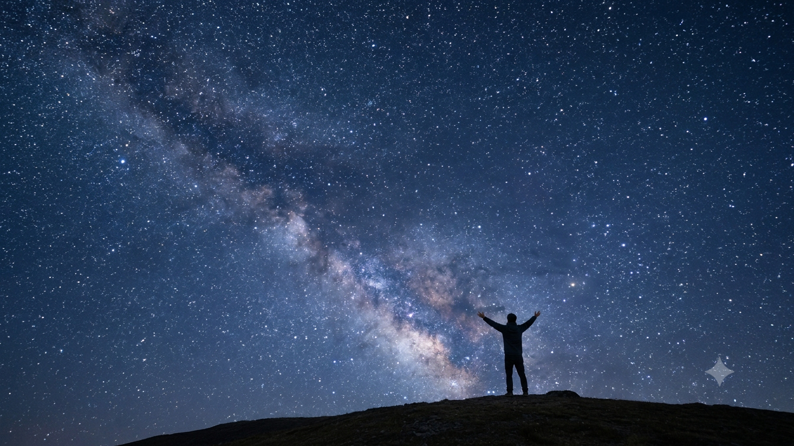

관점 변화 → 선택 변화 → 나다움 변화, 단계에 맞는 프로그램을 찾아보세요.

[관점변화] 무의식 인사이트 코칭
모집 중
알아도 바뀌지 않던 문제를, 움직이게 하는 코칭
대상 · 오래된 문제 하나를 몇 달째 들고 계신 분 · 상담도, 사주도, 타로도, 책도 해봤는데 제자리인 분 · 알아도 바뀌지 않아 답답하신 분
방식 · 1:1 대화 세션. 논리 분석 → 무의식 직관 → 몸(심장) 반응으로 확인 → 행동 계획, 네 단계로 진행하고 세션 뒤 개인 리포트를 드립니다.
[관점변화] 온라인 AHA 북코칭
모집 중
책 한 권으로 시작하는 온라인 코칭
대상 · 코칭은 아직 부담스러운 분 · 읽는 건 많은데 이야기 나눌 사람이 없는 분 · 책 한 권으로 가볍게 시작해 보고 싶은 분
방식 · 온라인 독서 토론. 좋은 책을 코칭 질문과 함께 한 장씩 공부하고, 생각을 나누며 내 삶에 연결합니다.
[관점변화] 오리엔테이션
상시 모집 · 무료
매달 첫째 주 월요일 저녁 8시
대상 · 나비스쿨이 처음인 분 · 어떤 프로그램이 나에게 맞는지 먼저 둘러보고 싶은 분 · 바로 결정하지 않고 들어 보고 싶은 분
방식 · 나비스쿨 신입생 오리엔테이션. 나비스쿨의 세 걸음(관점·선택·나다움 변화)과 프로그램을 소개합니다. 듣고만 있어도 괜찮습니다.
![[선택변화] 북살롱](./uploads/pages/2026/11/mwwjv8qc-6etr-ai.webp)
[선택변화] 북살롱
다음 시즌 안내
내 질문 하나로 시작하는, 책추남 북살롱
대상 · 읽는 건 많은데 이야기 나눌 사람이 없는 분 · 책을 삶의 변화로 연결하고 싶은 분 · 마음·돈·사람 공부를 함께할 동료가 필요한 분
방식 · 4개월을 한 시즌으로 하는 하버드식 독서 토론. 사전 독서·압축 리포트 → 이 책이 관점과 행동을 바꿨는지 함께 체크 → 가슴 울린 구절 공유·독서명상 → 각자의 질문에 집단지성으로 답하기.

[선택변화] 피닉스 퓨처스쿨
운영 중
청소년 미래인재학교와 7Q 통합 프로그램 피닉스 휴먼 스쿨로 이어지는 미래 인재 과정
대상 · 다가오는 변화의 시대에 미래를 준비하고 싶은 청소년·성인 · 배운 것을 삶과 일에서 실행하는 힘을 키우고 싶은 분 · 새로운 문명의 전환기에 리더로 성장하고 싶은 분
방식 · 미래를 읽고(미래지성), 나를 세우고(나다움), 실행하는(리더십) 프리미엄 과정. 청소년과 성인 과정으로 나뉘며 상담 후 맞는 과정을 안내합니다.

[나다움변화] 라이프체인저
상담 후 배정
‘나는 누구인가’를, 일곱 개의 장면으로 살아보는 시간
대상 · 지금 삶의 방향을 바꾸고 싶은 분 · 여러 프로그램 중 어떤 것이 맞는지 정리가 필요한 분 · 나를 깊이 있게 다시 설계하고 싶은 분
방식 · 상담을 통해 현재 상황과 목표를 파악한 뒤 맞는 과정을 배정합니다. 관점·선택·나다움 세 걸음을 따라 삶을 바꾸는 핵심 과정입니다.

[나다움변화] 리얼시크릿
상담 후 배정
내가 진짜 원하는 미래의 한 장면을 그리고, 그 전율을 하루 속에서 이어가는 코칭
대상 · 하루하루가 같은 모습으로 흘러가는 분 · 진짜 원하는 미래를 그려 보고 싶은 분 · 비전을 일상 속에서 계속 느끼며 살고 싶은 분
방식 · 내가 진짜 원하는 미래의 한 장면(비전 포인트)을 그리고, 그 전율을 하루 안에서 다시 떠올리며 이어가는 코칭입니다.
[나다움변화] NAVI 브랜드전략
상담 후 배정
나다움을 나만의 브랜드 전략으로 세우는 코칭
대상 · 나다움을 일과 사업으로 연결하고 싶은 분 · 나만의 브랜드를 만들고 싶은 분 · 나는 누구이고 무엇으로 기억되고 싶은지 정리하고 싶은 분
방식 · 나다움을 바탕으로 나만의 브랜드 전략을 세우는 코칭. 정체성 → 메시지 → 콘텐츠 → 실행 순으로 정리합니다.
[나다움변화] 나비 메신저
상담 후 배정
이 여정을 완주한 뒤, 다른 이의 날개가 되어주는 코치로 성장하는 과정
대상 · 나비스쿨 여정을 거친 뒤 다른 사람을 돕고 싶은 분 · 코치·강사·메신저로 성장하고 싶은 분 · 내 경험을 가르침으로 확장하고 싶은 분
방식 · 이 여정을 완주한 분이 다른 이의 날개가 되어 주는 코치로 성장하는 과정. 코칭 기본기와 나만의 메시지를 갖춥니다.